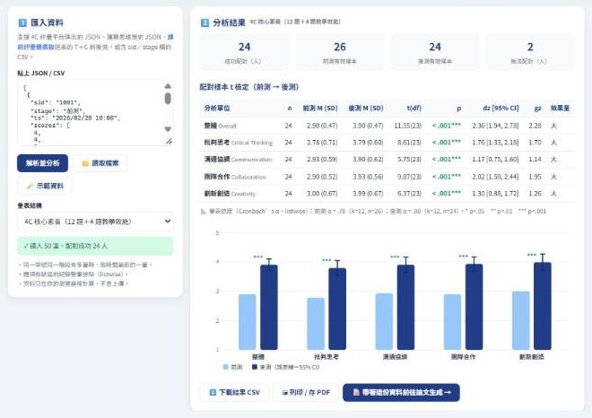
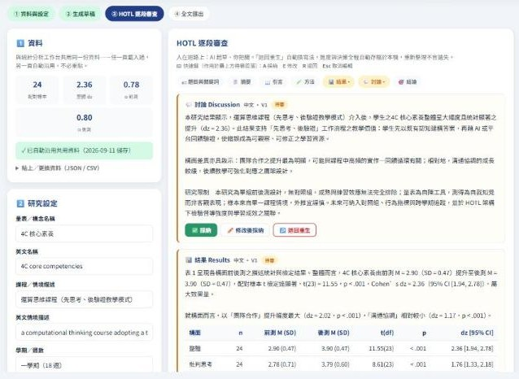
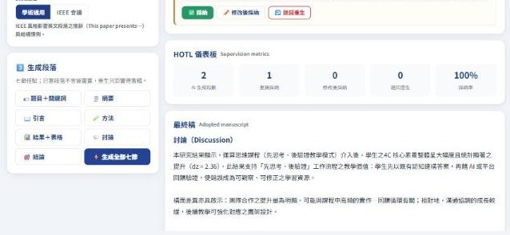

平台操作教學手冊
學生操作 × 教師研究者應用（網頁版） · v1.2 · 國立屏東科技大學 資訊管理系
🎬 教學影片
三分鐘看完四大功能實際操作。中文旁白版與英文旁白（中文字幕）版內容相同，擇一觀看即可。
中文旁白版（3 分 04 秒）
入口導覽 → 專題製作 → IOC 課程 → 統計分析 → 論文生成（HOTL 全流程）
英文旁白＋中文字幕版（2 分 08 秒）
English narration with Traditional Chinese subtitles — for international audiences
1 平台總覽
AI 賦能教學 Hub 是四合一的教學研究平台：專題創作與課程模擬產生學習數據，統計分析把數據算清楚，論文生成器把結果寫成可投稿的草稿。整個迴圈在瀏覽器內完成——零後端、免安裝、可離線；所有資料只存在你自己的裝置，除非主動匯出不會離開電腦。
| 頁面 | 用途 | 主要對象 |
|---|---|---|
| 入口 | 總覽與導流：連接所有教學平台 | 所有人 |
| IOC 課程 | 計算機概論模擬平台（12 模組） | 學生 |
| 課前評量 | 27 題六向度起點調查＋教師儀表板 | 學生／教師 |
| 統計分析 | 配對 t、效果量、信度、圖表 | 教師／研究者 |
| 論文生成 | 七節論文草稿＋HOTL 審查 | 教師／研究者 |
入口首頁：教學研究迴圈（專題創作 → 課程模擬 → 評量回饋 → 統計分析 → 論文生成）
2 學生篇：日常學習操作
2.1 進入 IOC 課程模擬平台
- 入口首頁點「IOC 計算機概論課程」區的「進入次頁」（或導覽列「IOC 課程」）。
- 上方 12 顆模組快速鍵：總覽、硬體、軟體、網路、封包流、3C 拆解、實作中心、虛擬組裝、即時評量、期中、期末考、AI 協作，點選即切換。
- 需要大畫面時點右上「全螢幕 ↗」。
IOC 次頁：上方模組快速鍵，下方直接操作模擬平台
2.2 做專題：AI 賦能學習平台
- 入口點「AI 賦能學習平台」開啟。
- 依左側五步驟：① 心智圖 → ② IPO 結構表 → ③ Python → ④ PPT → ⑤ 影音腳本。
- 需要 AI 協助時，先點側欄「⚙ 設定 AI 金鑰」（有免費方案清單）。
- 完成課程後填寫側欄「學習資源 → 學習後測問卷」（40 題）。
IPO 工具組：還沒寫程式 → 用「構想 → 架構」拆解器；已有程式 → 用「程式 → 模組」分析器。
2.3 填寫 4C 學習成效評量
- 入口點「4C 學習成效評量」。
- 填「學號後 4 碼」（前後測配對用）、選擇階段（前測／後測）。
- 完成 12 題核心素養＋4 題教學效能後送出。
2.4 填寫課前評量（開學第一週）
- 入口點「課前評量 → 學生作答」（或老師給的連結）。
- 選班級、填學號後 4 碼，依序作答 27 題（約 8 分鐘；有正解的題目不會就憑直覺選，不計成績）。
- 送出後作答自動上傳雲端（老師端即時看到）；畫面上的
PS1.回覆碼是備份，老師要求時再貼。 - 下方「你的起點」只給自己看；「給你的建議」用生活化的話說明接下來怎麼學；「全班現況與這學期的上課方式」是依全班即時資料產生的師生共識，看完勾「我看過了」。
?stage=post），只做 11 題運算思維與電腦常識，用來和學期初比較。3 教師研究者篇：統計分析工作台
3.1 課前評量教師儀表板
開啟教師儀表板，把學生回覆碼整段貼入（可一次貼整個 LINE 對話，系統自動撈出所有 PS1. 碼），或匯入 JSON／CSV。同裝置作答的紀錄會自動納入。
| 區塊 | 內容 |
|---|---|
| 總覽 | 人數、準備度 R 平均與 SD、起步／穩健／進階三群比例、建議教學模式（基礎鞏固／分層差異化／加速專題／標準節奏）與總體解釋 |
| 具體建議 | 依 12 條判準自動觸發（例：無程式經驗 ≥ 50% → Python 前加 1 週積木式；照單全收 AI ≥ 30% → 加「抓 AI 錯誤」活動） |
| 18 週逐週調整 | 左側選單選取單一班級，即顯示該班的逐週進度調整建議 |
| 答對率 | 11 題有正解題紅橘綠燈；< 50% 的概念建議前 4 週優先處理 |
| 分布與清單 | 學習偏好、AI 使用、所有題目分布、學生期望、逐人向度分數與分群 |
匯出：JSON（原始作答）、CSV（含向度分數與分群）、列印。按「📈 帶到統計工作台」會把 T＋C 共 11 題（答對=1）連同期末複測資料交給統計工作台做前後測配對 t 檢定。
雲端資料庫（與其他評量同一份試算表）
學生送出後會自動以統一記錄模型（kind=presurvey）寫入 Google 試算表；儀表板輸入教師碼按「⟳ 從雲端載入」即可拉回全班，勾「每 60 秒自動更新」可在課堂上即時看。雲端若同時有 4C 評量、即時測驗、期末考（assess4c／quiz／exam），會多出「跨評量對照」表：同一學號的課前準備度與後續得分率並列，並計算相關係數解讀起點的預測力。
學生端送出後也會直接看到「給你的建議」與「全班現況與這學期的上課方式」（去識別化的全班即時統計＋生活化的師生共識清單），勾選「我看過了」會回傳 kind=consensus，儀表板顯示已確認人數。
gas/Code.gs → 填 SHEET_ID與 TEACHER_CODE（教師密碼，請自訂；教師工作台以此向雲端驗證） → 部署為網頁應用程式（任何人）→ 把 /exec 網址填進各頁 <meta name="cc-cloud-url">。未填之前一切照舊存本機、排入佇列，填好後自動補送。把 4C 評量（或任何前後測 Likert 資料）變成可發表等級的統計結果：自動配對、配對 t、Cohen’s dz（Hedges gz）、95% CI、Cronbach’s α 與比較圖。統計引擎已對照 SciPy 驗證（最大誤差 4.4×10⁻¹⁵）。
- 從 4C 評量平台「前端資料區 → 匯出 JSON」取得檔案。
- 回到統計工作台，把檔案直接拖進頁面或貼上內容，按「解析並分析」。
- 第一次可先按「🧪 示範資料」看輸出樣貌。

分析結果：配對摘要、t 檢定表、信度與前後測比較圖
| 欄位 | 判讀基準 |
|---|---|
| p | p < .05 顯著（* ** *** 對應 .05／.01／.001） |
| dz | 0.2 小、0.5 中、0.8 大；小樣本引用 gz 更保守 |
| Cronbach’s α | ≥ .70 可接受，依施測階段分列 |
配對失敗時，結果卡會列出「僅完成單次施測」的學號清單，可據此催收。分析完成後點「📝 帶著這份資料前往論文生成」，資料自動交接、免重複貼上。
3.2 教師工作台：總覽＋統計＋論文（單一頁面、密碼進入）
開啟教師工作台，輸入教師密碼（由雲端驗證，不存於裝置）後有四個分頁：教師總覽、課前評量儀表板、統計分析、論文生成；右上顯示雲端連線狀態，「另開」可把目前分頁獨立開成新視窗。教師總覽（可 60 秒自動更新）把雲端裡所有平台的評量集中在一頁：
| 區塊 | 內容 |
|---|---|
| 即時動態 | 今日筆數、本週活躍人數、14 天無活動人數、近 14 天每日作答圖、最新 40 筆動態 |
| 各平台 KPI | 每種評量的平均得分率、筆數、人數、SD，附一段解讀 |
| 4C 前後測 | 雲端有 assess4c 前後測即自動算 paired t、dz、α，並交給統計工作台／論文生成 |
| 課前 → 期末複測 | T＋C 11 題答對率的配對檢定 |
| 關聯與預測力 | 平台間 Pearson r 矩陣（同學號平均得分率）＋解讀 |
| 需關注學生 | 起步型且平時偏低／無紀錄、平時 < 60%、14 天無活動 |
| 逐人矩陣 | 學號 × 平台，可排序、匯出 CSV |
| 整合建議 | 依雲端目前有哪些 kind，列出各平台尚待接上的作法與送出格式 |
</body> 前加 <script src="https://ai-empower-hub.netlify.app/assets/bridge.js" data-app="ioc-sim"></script>。橋接會自動把 CCLOUD.push／qadd／addRecord／對舊 Apps Script 的送出轉成統一記錄鏡射到同一資料庫，原本行為不變；新程式可呼叫 AEBridge.push({kind, score, max, detail})。kind：assess4c／quiz／midterm／exam／repair／build／project／survey。?sid=&cls=，舊站的橋接腳本接收後同樣自動帶入，沒有身分時會彈出小卡請學生填。4 教師研究者篇：HOTL 論文內文生成器
把評量數據直接寫成七節論文草稿（題目關鍵詞、摘要、引言、方法、結果含表格、討論、結論），繁中／英文／IEEE 會議風格切換。每一段都必須經你「採納／修改後採納／退回重生」才進入最終稿——AI 起草、人把關，決策全程留痕。

草稿佇列：結果節自動附統計表格，逐段審查
| 動作 | 效果 | 快速鍵 |
|---|---|---|
| ✅ 採納 | 原文進入最終稿 | A |
| ✏️ 修改後採納 | 開編輯框改完存檔（記錄修改幅度） | E |
| ↩️ 退回重生 | 填理由，AI 換寫法重生 V2、V3… | R |
快速鍵作用於最上方的待審段落；在輸入框內打字時不會觸發。進度自動存檔，重新整理不會遺失。

儀表板：生成數、採納率與平均修改幅度——監督紀錄本身就是 HOTL 研究資料
匯出：📋 複製全文、Markdown、Word (.doc)、LaTeX（IEEEtran 骨架）；監督日誌可另存 CSV／JSON。按「➕ 人機協作聲明」自動生成可放進論文的聲明段落。
5 常見問題
| 問題 | 解答 |
|---|---|
| 資料會上傳到伺服器嗎？ | 不會。零後端，一切存在你的瀏覽器；只有主動匯出才產生檔案。 |
| 換電腦後資料不見了？ | 資料綁定瀏覽器本機。換裝置前先匯出（CSV／Markdown／JSON），到新裝置重新貼入。 |
| 清除瀏覽紀錄會怎樣？ | 連同「網站資料」清除時，本機草稿與紀錄會消失，請養成隨手匯出的習慣。 |
| 統計數字可信嗎？ | 引擎已對照 SciPy 1.17 驗證，最大誤差 4.4×10⁻¹⁵（repo 內 tests/verify-stats.md）。 |
| 生成段落可直接投稿？ | 不建議——數字可信，文字須逐句確認潤飾，這正是 HOTL 流程的意義。文責在人。 |
| 前後測配對 0 人？ | 檢查兩階段學號是否一致、stage 是否為「前測／後測」，且至少 2 人完成前後測；結果卡的未配對名單可幫你追人。 |
Word 版手冊與教學影片請洽課程公告；平台原始碼見 GitHub（pjkuo）。